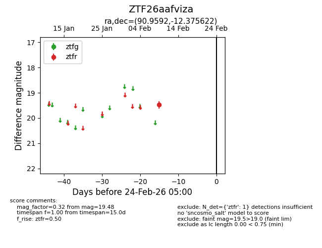
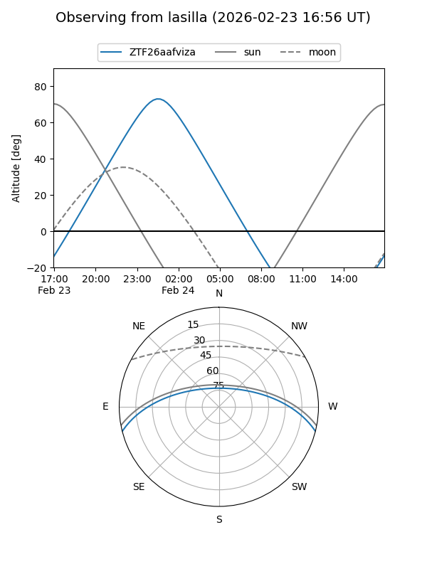
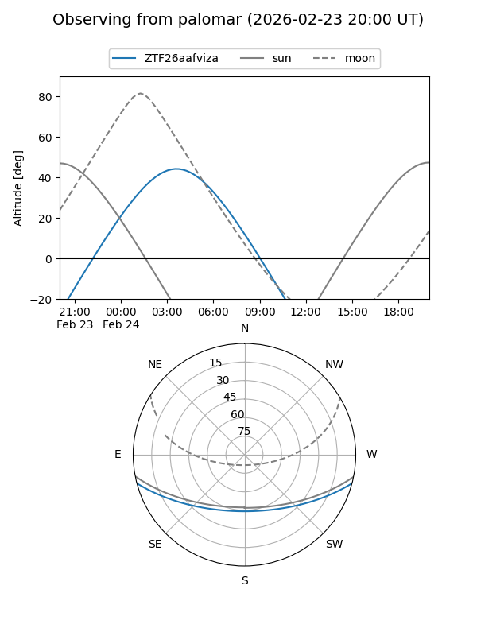

ZTF26aafviza
Target ZTF26aafviza at 2026-02-24 09:08
Aliases and brokers:
FINK: link
Lasair: link
ALeRCE: link
alt names
ZTF26aafviza (ztf,fink_ztf)
Coordinates:
equatorial (ra, dec) = 90.9592,-12.37562
equatorial (HMS+DMS) = 06:03:50.22,-12:22:32.24
galactic (l, b) = (218.8396,-16.08033)
Flags:
Photometry:
last ztfr=19.48
1 ztfr detections
Lightcurve

Visibility


Additional plots